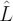
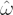
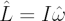
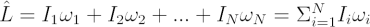
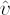
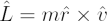

Angular momentum is the rotational analogue of linear momentum in Newtonian physics.
The angular momentum

of a solid body is the product of its moment of inertia I and angular velocity
.
In a closed system angular momentum is conserved. Curiously, angular momentum is a vector quantity, and points in the same direction as the angular velocity of the object.
The angular momentum of a system of N particles is just the vector summation of all of its constituents.

The angular momentum of a point particle of mass m, moving with velocity

, at a distance , from some reference point is:
where the is the vector cross product. The direction of the vector is given by the right hand rule – by holding the fingers in the direction of and sweeping them towards , the thumb dictates the direction of the resultant vector.